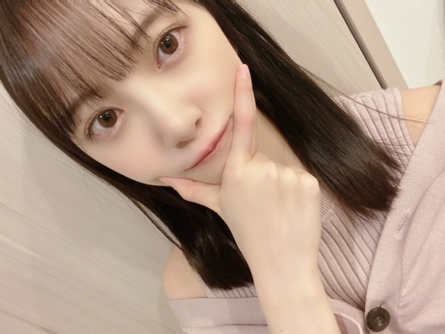
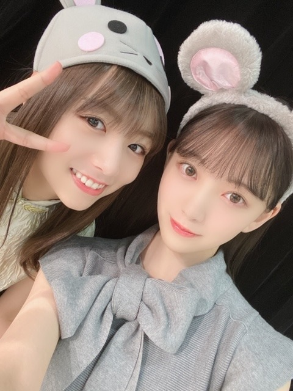

2020/0204Tueこじんまり
こんばんは。
今年は特に料理やお花など
お家でできることを充実させたいなぁと思っています。
岐阜にいた時はまったり何も考えずに生きていたから
人混みにいるとやはり疲れてしまうみたい...
普段も、友達とご飯やお買い物に行ったとしても
出来るだけ早くお家に帰って
23時前にはお布団に入って
沢山寝て...という生活をしているので
私はアウトドア向きでは無いのかなぁと。
ただ単に、家が好きなのもあるんですけれど
家族との時間も、1人の時間も自分の体調も友達との時間も程よくちゃんと、大切にしたいなぁ
24歳になる年、自分と向き合い
落ち着いた豊かな生活をしていきたいです
あ、最近
無添加のミートボールと
無添加無農薬のサラダにハマっています！
美味しいの☺︎
食べていたら愛犬プティくんにジーッと見つめられて困りました...
あげたいけどあげられないんだ。ごめんね。


そして選抜発表がありました。
今回も選んでいただき、嬉しく思います。
ありがとうございます。
そして1期生の方が全員選抜で1列目2列目にいらっしゃいます。
後輩として、背中をみてたくさん学ばせていただきたいですし3.4期生には先輩らしい姿を見せられるようわたしらしく、頑張ります。
これからも乃木坂46をよろしくお願いします。
では！
2020/02/04 19:00
コメント(319)
頑張って、未来の乃木坂４６を引っ張っててね!ホ・リミオナ… 今日のレコメン楽しみ!未央奈ちゃんが選抜だろうが、アンダーだろうが応援する気持ちは変わらないからね。乃木坂４６はアンダーだろうが、選抜だろうが皆、凄いグループだからね。
こんにちは‼︎
ブログ更新、ありがとうございます♪
今年は、家で楽しめることを充実させたいんですね。
とってもいいことだと思います‼︎
特に最近は、人ごみに出ていくリスクもありますもんね。
無用に恐れる必要はないけど、もともとお家が大好きなら、インドア充実させた方が一挙両得な気がします♪
最近は、無添加ミートボールとサラダにハマっているんですね‼︎
じっと見つめるプティ君。
う〜ん、目に浮かびますね(笑)。
ワンちゃんの一心不乱に見つめる瞳って、もう可愛くて可愛くて、心くすぐられますよね‼︎
あまりの可愛さに、食べ物あげたくなっちゃうんだけど…
汗をかけない彼らにとっては、人間用の味付けはちょっと濃すぎますからね。
あげたいけど、あげられない辛さ(苦笑)。
人間の方がぐっと我慢しないとね♪
そうそう、らじらー聴きましたよ‼︎
さぁちゃんからプレゼント貰えて、良かったですね♪
早川聖来ちゃんのブログでは、未央奈の黒髪ボブがすごく好きだって書いてありました。
未央奈、後輩に慕われてますね♪
さて、この後はレコメン。
楽しみにしてますね♪
ではでは、また。
明日も未央奈にとっていい1日になりますように♪
ブログ更新、ありがとうございます♪
今年は、家で楽しめることを充実させたいんですね。
とってもいいことだと思います‼︎
特に最近は、人ごみに出ていくリスクもありますもんね。
無用に恐れる必要はないけど、もともとお家が大好きなら、インドア充実させた方が一挙両得な気がします♪
最近は、無添加ミートボールとサラダにハマっているんですね‼︎
じっと見つめるプティ君。
う〜ん、目に浮かびますね(笑)。
ワンちゃんの一心不乱に見つめる瞳って、もう可愛くて可愛くて、心くすぐられますよね‼︎
あまりの可愛さに、食べ物あげたくなっちゃうんだけど…
汗をかけない彼らにとっては、人間用の味付けはちょっと濃すぎますからね。
あげたいけど、あげられない辛さ(苦笑)。
人間の方がぐっと我慢しないとね♪
そうそう、らじらー聴きましたよ‼︎
さぁちゃんからプレゼント貰えて、良かったですね♪
早川聖来ちゃんのブログでは、未央奈の黒髪ボブがすごく好きだって書いてありました。
未央奈、後輩に慕われてますね♪
さて、この後はレコメン。
楽しみにしてますね♪
ではでは、また。
明日も未央奈にとっていい1日になりますように♪
未央奈ー
選抜おめでとー
最強の３列目を楽しみにしてるよー
何はともあれ、ぱっつんかわいすぎるぞー
選抜おめでとー
最強の３列目を楽しみにしてるよー
何はともあれ、ぱっつんかわいすぎるぞー
みおな
今日もお疲れ様です
レコメン中だね
友達と遊ぶ時は、自分も23時までには家に帰っていたいタイプです
次の日がオフだったとしても、22時くらいにはお開きにして帰り出さないとそわそわしてしまいます笑
自分の部屋に戻った時は、妙な安心感があるよね
無添加無農薬のサラダはヘルシーなのかな？
健康志向で良いと思います
25枚目の選抜発表がありましたね
3列目が多かったから、その時点で2列目とフロントは1期生で固めるんだなってすぐ気付きました
とても胸熱なフォーメーションだと思いました
みおなは、アンダー、センター、フロント、2列目、今回は3列目と、一通り経験してる人は、中々いないからレアだと思います
25枚目も応援してくので頑張って下さい（ほぼ分かってたけど個握が無いのが寂しいな）
ありがとうございました
今日もお疲れ様です
レコメン中だね
友達と遊ぶ時は、自分も23時までには家に帰っていたいタイプです
次の日がオフだったとしても、22時くらいにはお開きにして帰り出さないとそわそわしてしまいます笑
自分の部屋に戻った時は、妙な安心感があるよね
無添加無農薬のサラダはヘルシーなのかな？
健康志向で良いと思います
25枚目の選抜発表がありましたね
3列目が多かったから、その時点で2列目とフロントは1期生で固めるんだなってすぐ気付きました
とても胸熱なフォーメーションだと思いました
みおなは、アンダー、センター、フロント、2列目、今回は3列目と、一通り経験してる人は、中々いないからレアだと思います
25枚目も応援してくので頑張って下さい（ほぼ分かってたけど個握が無いのが寂しいな）
ありがとうございました
人は年齢を重ねれば重ねるほど悩みも増えますね。そういうときに誰かがいれば話を聴くといいなぁと私はよく感じますね。人混みにいるに疲れたらできる程もっと自分の時間を作ってみてバランスを改めて調整すればどうですか。
アウトドア向き不向きは他人の決めたことではない自分の性格と嗜好と気分に依る選択と思います。
家族も友達もとの時間大切にしたい気持ち素敵です。家族にしても友達にしても、お互い数十億の確率の中で出会った存在ですからね。でもその前唯一存在の自分の本心と状況に真摯に向き合わなきゃ。
みおなさんの飼ったわんちゃんに会ってみたいね。
アウトドア向き不向きは他人の決めたことではない自分の性格と嗜好と気分に依る選択と思います。
家族も友達もとの時間大切にしたい気持ち素敵です。家族にしても友達にしても、お互い数十億の確率の中で出会った存在ですからね。でもその前唯一存在の自分の本心と状況に真摯に向き合わなきゃ。
みおなさんの飼ったわんちゃんに会ってみたいね。
未央奈ちゃん!
ブログ更新ありがとう!
落ち着いて生活しているので安心です。
いつもかわいいね！
応援してるよ☺️☺️
ブログ更新ありがとう!
落ち着いて生活しているので安心です。
いつもかわいいね！
応援してるよ☺️☺️
２５枚目は史上最高の３列目だと思います。センター経験者４名もいる。
２期、３期、４期が３列目からまいやんの卒業を見送ってあげてください。
２期、３期、４期が３列目からまいやんの卒業を見送ってあげてください。
みおなちゃん、こんにちは。
はるやまのCM、僕は動画サイトで見たよ。みおなちゃん、スーツ姿似合っていて、めっちゃ綺麗で、めっちゃかわいかったです。
CMソングは甲斐バンドさんの、ヒーローでしたね。いい曲ですよね。
みおなちゃん、体調に気をつけて仕事頑張ってね。
またコメントするね。
はるやまのCM、僕は動画サイトで見たよ。みおなちゃん、スーツ姿似合っていて、めっちゃ綺麗で、めっちゃかわいかったです。
CMソングは甲斐バンドさんの、ヒーローでしたね。いい曲ですよね。
みおなちゃん、体調に気をつけて仕事頑張ってね。
またコメントするね。
堀ちゃん！！更新ありがとう！
コメント、いつもより遅くなりました！
23時前には寝てる！？
とてもいい週間だね！！
自分も早く寝ようとは思いつつも
いつも遅くなってしまうことが
多々あるので…笑
堀ちゃん見習います！！
そして…
選抜おめでとう ！！
3列目！？ってなったんですけど
よくよく考えたら
先輩の後ろ姿見れて
これからの乃木坂が楽しみだな〜
って感じさせるフォーメーション
だと思いました。
3列目でもどこにいても
堀ちゃん探すし、
テレビに食いついて
応援するからね！！
これからも支えて行きます！！
頑張れ〜〜！！！
次回の更新も待ってるよ〜！！
では！！
おやすみおな〜！
コメント、いつもより遅くなりました！
23時前には寝てる！？
とてもいい週間だね！！
自分も早く寝ようとは思いつつも
いつも遅くなってしまうことが
多々あるので…笑
堀ちゃん見習います！！
そして…
選抜おめでとう ！！
3列目！？ってなったんですけど
よくよく考えたら
先輩の後ろ姿見れて
これからの乃木坂が楽しみだな〜
って感じさせるフォーメーション
だと思いました。
3列目でもどこにいても
堀ちゃん探すし、
テレビに食いついて
応援するからね！！
これからも支えて行きます！！
頑張れ〜〜！！！
次回の更新も待ってるよ〜！！
では！！
おやすみおな〜！
こんばんはお疲れさま☺
今度は良かったら料理の写真を期待してよいかな？✨
堀ちゃんのエプロン姿を見たいです☺
ではではまたね☺
体調気をつけてな✨
頑張りや☺
出来るだけボジティブにね。
慌てず一歩一歩前に行こう✨
ほなね、堀ちゃん☺
今度は良かったら料理の写真を期待してよいかな？✨
堀ちゃんのエプロン姿を見たいです☺
ではではまたね☺
体調気をつけてな✨
頑張りや☺
出来るだけボジティブにね。
慌てず一歩一歩前に行こう✨
ほなね、堀ちゃん☺
コメント遅くなりましたが、
選抜おめでとうございます！！
堀さんは
日々、お忙しい中で沢山の事を考えていて、すごいなぁ
１人でも出来る事、出来ない事であっても誰かと協力して出来る事を経験して、これから先、今以上に視野が広がった堀さんになりますねっと思いました
楽しんで下さい、応援してます！
選抜おめでとうございます！！
堀さんは
日々、お忙しい中で沢山の事を考えていて、すごいなぁ
１人でも出来る事、出来ない事であっても誰かと協力して出来る事を経験して、これから先、今以上に視野が広がった堀さんになりますねっと思いました
楽しんで下さい、応援してます！
お母さんが食べたい物を食べさせてあげるんだね
優しい！
カレーは暖まりますな
やっぱり毎日忙しいと、そうゆう生活パターンに
なっちゃうよね？分かる！
帰ってきてもご飯食べて、お風呂入って後は、
寝るだけだもんね！
言われてみたら布団に入る瞬間とご飯を食べている
時は幸せだよね
俺は、未央奈ちゃんがいるだけで頑張れるし東京で
働いていても同じ東京で働いているんだなって
思いながら頑張ってるよ！
優しい！
カレーは暖まりますな
やっぱり毎日忙しいと、そうゆう生活パターンに
なっちゃうよね？分かる！
帰ってきてもご飯食べて、お風呂入って後は、
寝るだけだもんね！
言われてみたら布団に入る瞬間とご飯を食べている
時は幸せだよね
俺は、未央奈ちゃんがいるだけで頑張れるし東京で
働いていても同じ東京で働いているんだなって
思いながら頑張ってるよ！
みおちゃんブログ更新ありがとう♪
無理せずみおちゃんのペースで24歳を楽しく過ごして欲しいな(^ ^)
俺も27になるから色々考えていかないといけないから、変われるように頑張ります！
可愛い写真たくさんありがとう♪
そして選抜おめでとう！！最高の曲になることは分かってます！こちらこそよろしくお願いします(^O^)!
福岡のトゥモロー⊿
無理せずみおちゃんのペースで24歳を楽しく過ごして欲しいな(^ ^)
俺も27になるから色々考えていかないといけないから、変われるように頑張ります！
可愛い写真たくさんありがとう♪
そして選抜おめでとう！！最高の曲になることは分かってます！こちらこそよろしくお願いします(^O^)!
福岡のトゥモロー⊿
未央奈～！
やっとやっと、乃木坂Mobileのガシャで未央奈の壁紙当てました～！
バレンタインのやつ！可愛かった❤️
大事にします～！
やっとやっと、乃木坂Mobileのガシャで未央奈の壁紙当てました～！
バレンタインのやつ！可愛かった❤️
大事にします～！
みおなちゃん更新ありがとう☺
なかなかコメントできてなくて
ごめんなさいm(._.)m
25thシングル選抜入りおめでとう✨
どんな曲になるのか、楽しみです♪
最近また寒いね..(; ;)
体調には気をつけて
なかなかコメントできてなくて
ごめんなさいm(._.)m
25thシングル選抜入りおめでとう✨
どんな曲になるのか、楽しみです♪
最近また寒いね..(; ;)
体調には気をつけて
選抜おめでとうー！
25thは白石さんの卒業シングル。
フォーメーションもすごく熱いものになってますね。
楽しみにしてます！
25thは白石さんの卒業シングル。
フォーメーションもすごく熱いものになってますね。
楽しみにしてます！
未央奈ちゃん、25thシングルの選抜おめでとう！！
新曲すごく楽しみにしています^_^
新曲すごく楽しみにしています^_^
25thシングル、選抜入りおめでとうございます。
夜遅くにすみません
お茶の葉っぱを食べてみて買うという、堀さんがお茶にこだわりがあるとは知りませんでした
みんな同じ空の下、そうですね、そんな言葉が送られてきただけでもモバメをとってよかったなと思える瞬間ですね
まだ質問を受け付けていたら、どんなことを言われると嬉しいか、よかったらおしえてください。
今後コメントを書くときの参考にしたいです。
またなにかあればコメントします！
健康にはお気をつけてお過ごしください！
夜遅くにすみません
お茶の葉っぱを食べてみて買うという、堀さんがお茶にこだわりがあるとは知りませんでした
みんな同じ空の下、そうですね、そんな言葉が送られてきただけでもモバメをとってよかったなと思える瞬間ですね
まだ質問を受け付けていたら、どんなことを言われると嬉しいか、よかったらおしえてください。
今後コメントを書くときの参考にしたいです。
またなにかあればコメントします！
健康にはお気をつけてお過ごしください！
やっほ〜♡
みおっはー♪
って、もう午後やけど。。。笑
午後出勤なんよ〜
このところ、仕事を詰めていたから
久しぶりにゆっくり寝られたよ〜
ってわけで、ブログありがとう！
返事が遅くなってごめんね！！
今回の選抜は、特別な感じやから
しっかりと、卒業するメンバーを見送ってあげてね☆
あと、2期生ライブが楽しみ過ぎるよー！！！
オーバーチャーの前に琴子にソロバラードパートを
任せるなど、今までの乃木ライブにない演出を
やっちゃおう！！
ちなみに、欅がデビュー4日目くらいに
オーバーチャーの前に、ゆいちゃんずの曲から
スタートした事があるよ。
たしか、tgcのライブだったと思う。
では、
楽しみにしているよ☆
チケット取れるようにお祈りしていてね♪
わたる⊿
って、もう午後やけど。。。笑
午後出勤なんよ〜
このところ、仕事を詰めていたから
久しぶりにゆっくり寝られたよ〜
ってわけで、ブログありがとう！
返事が遅くなってごめんね！！
今回の選抜は、特別な感じやから
しっかりと、卒業するメンバーを見送ってあげてね☆
あと、2期生ライブが楽しみ過ぎるよー！！！
オーバーチャーの前に琴子にソロバラードパートを
任せるなど、今までの乃木ライブにない演出を
やっちゃおう！！
ちなみに、欅がデビュー4日目くらいに
オーバーチャーの前に、ゆいちゃんずの曲から
スタートした事があるよ。
たしか、tgcのライブだったと思う。
では、
楽しみにしているよ☆
チケット取れるようにお祈りしていてね♪
わたる⊿
ねずみ可愛すぎる
未央奈ちゃん、おつかれさまっ！
25枚目選抜おめでとう！！
今回は１期生が福神だから、未央奈ちゃんは久々の３列目だね！
１期生の活躍がすばらしい曲になると思う！
今はライブリハの真っ最中かな？
体調に気をつけて乗りきってね！
インスタも毎日チェックしてるよ～！
応援してます！
25枚目選抜おめでとう！！
今回は１期生が福神だから、未央奈ちゃんは久々の３列目だね！
１期生の活躍がすばらしい曲になると思う！
今はライブリハの真っ最中かな？
体調に気をつけて乗りきってね！
インスタも毎日チェックしてるよ～！
応援してます！
こんばんは。
まずは25thシングル選抜入りおめでとう。
3列目に選ばれたものの、まいやんを明るく送れるように素晴らしいパフォーマンスを期待します。
それからついさっき入ってきた情報だけど、親友のSKEのじゅりな(松井珠理奈)がグループ卒業を発表しました。
みおなからもエールを送ってほしい。
まずは25thシングル選抜入りおめでとう。
3列目に選ばれたものの、まいやんを明るく送れるように素晴らしいパフォーマンスを期待します。
それからついさっき入ってきた情報だけど、親友のSKEのじゅりな(松井珠理奈)がグループ卒業を発表しました。
みおなからもエールを送ってほしい。
大丈夫か？
今日は寒かったね。東京の朝は氷点下だもんな
今年、初、観測らしく今日はほんと寒かった！
ストーブの近くで暖まって
今日は寒かったね。東京の朝は氷点下だもんな
今年、初、観測らしく今日はほんと寒かった！
ストーブの近くで暖まって
応援してます
やっほ〜♡♡♡
選抜おめでとう㊗️
25th 楽しみにしてるね！
25th 楽しみにしてるね！
未央奈ちゃんおはよう！
最近物凄く寒いですね〰️。
今朝の東京は滅茶苦茶寒いです
今日は雪の予報も出てますから、体調に気を付けて頑張ってくださいね
最近物凄く寒いですね〰️。
今朝の東京は滅茶苦茶寒いです
今日は雪の予報も出てますから、体調に気を付けて頑張ってくださいね
更新ありがとうございます⊂(･∀･⊂*)
すでに２期生をリードしながら、
十分頑張ってるのですから、
自分を大事に生活面を充実させれば良いと思います。
そういう心のゆとりと、自分の感性磨きと、
心身の成長などが、アイドルとしての魅了アップに
つながると思います。
２期生を盛り立てようと頑張っている
堀ちゃんを、ずっと尊敬して、応援しています(^-^)/
すでに２期生をリードしながら、
十分頑張ってるのですから、
自分を大事に生活面を充実させれば良いと思います。
そういう心のゆとりと、自分の感性磨きと、
心身の成長などが、アイドルとしての魅了アップに
つながると思います。
２期生を盛り立てようと頑張っている
堀ちゃんを、ずっと尊敬して、応援しています(^-^)/
おめでとうございます!!
、、(羽織る用のパーカーを肩からかけてあげて、、ぎゅっ、と)大丈夫、これでもう、寒くない。寒く、、ない、、、ぎゅう、、

今日も元気に頑張ろうね(^_-)~
今日も元気に頑張ろうね
未央奈…
やっほ〜♡
こんばんは。ブログ更新ありがとうございます
そうなんですね、凄く偉いなあと思います！
私は昼夜逆転してしまっているので、未央奈ちゃんをきちんと見習わないといけない！って思いました。
写真集だけでは覗く事が出来ない未央奈ちゃんの貴重なプライベートを知る事が出来て、本当に嬉しかったです
私も、未央奈ちゃんを真似して、23時頃には寝るように心掛けますね
それと、ご家族とのお時間もお友達とのお時間も未央奈ちゃんのお時間もご体調に合わせて、「程良く大切にしたい。」というのは凄いなあと思いました。
愛犬プティくんとミートボールとサラダのお話はとても可愛いと思いました
未央奈ちゃんは無添加、無農薬を好まれているんですね。なるほど！私も真似して未央奈ちゃんみたいになれるように頑張りますね！
選抜発表、１期生の皆さんが全員選抜されたみたいですね！そして、未央奈ちゃんが選抜された事も本当に嬉しかったです！おめでとうございます！
これからも、未央奈ちゃんの事も乃木坂46さんの事も応援していきますね
未央奈ちゃん。
こんばんは
ここ何日か寒い日が続くけど、体調には気をつけてね。
25枚目楽しみです。
早く観たいな。
こんばんは
ここ何日か寒い日が続くけど、体調には気をつけてね。
25枚目楽しみです。
早く観たいな。
はじめまして。ブログ頻繁に更新してくれてありがとう。読んでます。永遠のおしめんです。
寒いよ～ 寒いよ～ 寒い(>_<)！あああ、、、未央奈助けてえ。笑
こんばんは！
23時前にはお布団に入るって健康的で良い事だ
僕も見習わないとな
未央奈が今年で24歳になるのかぁ
いつの間に？って感じ(笑)
25枚目シングルは、背中で語って下さる1期生を見て、たくさんの事を学んで下さい
それではまた！
23時前にはお布団に入るって健康的で良い事だ
僕も見習わないとな
未央奈が今年で24歳になるのかぁ
いつの間に？って感じ(笑)
25枚目シングルは、背中で語って下さる1期生を見て、たくさんの事を学んで下さい
それではまた！
あぁ、美しい。。。
何て美しい声なんだろう
僕にとって
あなたの声は音楽です
今日も一日お疲れさまでした☺︎
何て美しい声なんだろう
僕にとって
あなたの声は音楽です
今日も一日お疲れさまでした☺︎
みおなちゃん更新ありがとう╰(*´︶`*)╯♡
人混みは疲れるよね(´・∀・｀)
自分も必要な事以外は家から出たくない派です(*´꒳`*)
特に今は色んな事があるから体調には気を付けて行こうね(*´-`)
写真もありがとう！
選抜発表がありましたね
選抜おめでとう٩(๑❛ᴗ❛๑)۶
今回は1期生の方々の背中を見ながらたくさん学ぶシングルになりそうですね･:*+.\(( °ω° ))/.:+
応援しております(● ˃̶͈̀ロ˂̶͈́)੭ꠥ⁾⁾
人混みは疲れるよね(´・∀・｀)
自分も必要な事以外は家から出たくない派です(*´꒳`*)
特に今は色んな事があるから体調には気を付けて行こうね(*´-`)
写真もありがとう！
選抜発表がありましたね
選抜おめでとう٩(๑❛ᴗ❛๑)۶
今回は1期生の方々の背中を見ながらたくさん学ぶシングルになりそうですね･:*+.\(( °ω° ))/.:+
応援しております(● ˃̶͈̀ロ˂̶͈́)੭ꠥ⁾⁾
プティくんが「私も人間ですけど、何か?」とつぶやいてますね(笑)
堀ちゃんこんばんは！
「家族との時間も1人の時間も自分の体調も友達との時間もちゃんと大切にしたい」
凄く分かります、こう考えてる堀ちゃんが人としてめっちゃ大好きです( ´ ▽ ` )♩
自分に厳しくすることももちろん大事で必要なことだとは思いますし、そうしないといけない時もあると思います(^^)
でも、自分に優しくしながら成長していくって難しいことで、生きていく上で、色んな人と関わっていく上で、そういう気持ちも持ち合わせていたいなと(o^^o)
人生長いですし、できるだけ笑い続けていたいですし( ´ ▽ ` )
それに、普段から自分の体調としっかり相談して向き合っておけば、自分にもこんな状況があったから、もしかしたら相手にも…みたいにより周りのことを思いやれると思うんです( ´ ▽ ` )
自分に優しくできるからこそ、周りに正しく優しくできるんじゃないかなと思います(o^^o)
あとはやっぱり、自分を大切に思ってくれている周りの人のためにも、なるべく健康でいたいなぁと思います( ´ ▽ ` )
ときに体調を崩してしまうのは仕方ないですが、元気にみんなで笑い合ってる時間は周りにとっても自分にとっても幸せです(o^^o)
僕にとって堀ちゃんはめちゃめちゃ大切で、そんな堀ちゃんを堀ちゃん自身が大切にしてくれるのは凄く嬉しいです(*´▽｀*)
家族も友達も自分も大切にしながら、夢に向かって進んでいく、そんな堀ちゃんの姿が大好きです(o^^o)♩
それと、アウトドアって基本は疲れる前提のものですから、疲れちゃうから向いてないってことは全然ないと思います( ´ ▽ ` )
僕も人混みはすぐ疲れちゃいますし、家から離れれば離れるほどなんとなく疲れちゃいますが、アウトドア派と自称しています笑
日の出ている時間に外で遊んで、「あ〜疲れたけど楽しかった！」って18時ぐらいに家に帰って家族でご飯を食べてゆっくりして、23時ぐらいに眠る、最高のアウトドア派だと思います(o^^o)
これからもたくさんアウトドアを楽しめますよ〜( ´ ▽ ` )♩
なんか個人的なこともたくさん書いてしまって長くなってしまいました(^^;)
とにかく堀ちゃんが記してくれた想いに共感と喜びを覚えました、ありがとうございます(o^^o)♩
落ち着いた豊かな人生にしていきましょう、波は自然と起きるものです( ´ ▽ ` )
では！またコメントさせてくださいー！
おやすみおな！
「家族との時間も1人の時間も自分の体調も友達との時間もちゃんと大切にしたい」
凄く分かります、こう考えてる堀ちゃんが人としてめっちゃ大好きです( ´ ▽ ` )♩
自分に厳しくすることももちろん大事で必要なことだとは思いますし、そうしないといけない時もあると思います(^^)
でも、自分に優しくしながら成長していくって難しいことで、生きていく上で、色んな人と関わっていく上で、そういう気持ちも持ち合わせていたいなと(o^^o)
人生長いですし、できるだけ笑い続けていたいですし( ´ ▽ ` )
それに、普段から自分の体調としっかり相談して向き合っておけば、自分にもこんな状況があったから、もしかしたら相手にも…みたいにより周りのことを思いやれると思うんです( ´ ▽ ` )
自分に優しくできるからこそ、周りに正しく優しくできるんじゃないかなと思います(o^^o)
あとはやっぱり、自分を大切に思ってくれている周りの人のためにも、なるべく健康でいたいなぁと思います( ´ ▽ ` )
ときに体調を崩してしまうのは仕方ないですが、元気にみんなで笑い合ってる時間は周りにとっても自分にとっても幸せです(o^^o)
僕にとって堀ちゃんはめちゃめちゃ大切で、そんな堀ちゃんを堀ちゃん自身が大切にしてくれるのは凄く嬉しいです(*´▽｀*)
家族も友達も自分も大切にしながら、夢に向かって進んでいく、そんな堀ちゃんの姿が大好きです(o^^o)♩
それと、アウトドアって基本は疲れる前提のものですから、疲れちゃうから向いてないってことは全然ないと思います( ´ ▽ ` )
僕も人混みはすぐ疲れちゃいますし、家から離れれば離れるほどなんとなく疲れちゃいますが、アウトドア派と自称しています笑
日の出ている時間に外で遊んで、「あ〜疲れたけど楽しかった！」って18時ぐらいに家に帰って家族でご飯を食べてゆっくりして、23時ぐらいに眠る、最高のアウトドア派だと思います(o^^o)
これからもたくさんアウトドアを楽しめますよ〜( ´ ▽ ` )♩
なんか個人的なこともたくさん書いてしまって長くなってしまいました(^^;)
とにかく堀ちゃんが記してくれた想いに共感と喜びを覚えました、ありがとうございます(o^^o)♩
落ち着いた豊かな人生にしていきましょう、波は自然と起きるものです( ´ ▽ ` )
では！またコメントさせてくださいー！
おやすみおな！
未央奈。
２期生ライブ、申込したよ！
当たるといいな☺️
未央奈達の夢が叶った瞬間を一緒に観たいです！
２期生ライブ、申込したよ！
当たるといいな☺️
未央奈達の夢が叶った瞬間を一緒に観たいです！
みおな〜♪
おはようっ！
仕事でカナダに行っておりました
オタワに滞在したんだけど
観光がてらトロントとオンタリオにも
行ってきました
冬のナイアガラの滝は圧倒的で
その水量によって凍りはしないんだけど
飛沫が凍りつきクリスタルのような
輝きを放ってました❆
オンタリオ湖の夕焼けや夜景が幻想的で
CNタワーやスカイドームを背景とした
風景はまさに絶景のひと言です！
帰国してみると
やっぱり、日本は温帯気候
真冬の今でも
カナダに比べると暖かく感じるから
不思議なものだなぁ
さてさて、もうすぐ
バスラが始まるね
2月のライブと言えば、
2015年の3rd YEAR BIRTHDAY LIVEを
思い出します
凍えるような気温の中、
それに負けない熱気で7時間半を
駆け抜けた西武ドーム
凄かったなぁ。。。
あの時はみんな無我夢中で
我武者羅に頑張ってたよなぁ
今回のライブ、あの時とは
環境もメンバーも全く違うけど
また伝説と言われるくらいの
ライブが観たい！
あの時の尖ってた
乃木坂の勢いを感じたい！
もう一度、
乃木坂の熱い魂を
受けとめたい！
そう、切に願っています
まだまだ寒い日が続きますが
どうぞお体に気をつけて
いってらっしゃい
おはようっ！
仕事でカナダに行っておりました
オタワに滞在したんだけど
観光がてらトロントとオンタリオにも
行ってきました
冬のナイアガラの滝は圧倒的で
その水量によって凍りはしないんだけど
飛沫が凍りつきクリスタルのような
輝きを放ってました❆
オンタリオ湖の夕焼けや夜景が幻想的で
CNタワーやスカイドームを背景とした
風景はまさに絶景のひと言です！
帰国してみると
やっぱり、日本は温帯気候
真冬の今でも
カナダに比べると暖かく感じるから
不思議なものだなぁ
さてさて、もうすぐ
バスラが始まるね
2月のライブと言えば、
2015年の3rd YEAR BIRTHDAY LIVEを
思い出します
凍えるような気温の中、
それに負けない熱気で7時間半を
駆け抜けた西武ドーム
凄かったなぁ。。。
あの時はみんな無我夢中で
我武者羅に頑張ってたよなぁ
今回のライブ、あの時とは
環境もメンバーも全く違うけど
また伝説と言われるくらいの
ライブが観たい！
あの時の尖ってた
乃木坂の勢いを感じたい！
もう一度、
乃木坂の熱い魂を
受けとめたい！
そう、切に願っています
まだまだ寒い日が続きますが
どうぞお体に気をつけて
いってらっしゃい
こんにちは
第92回アカデミー作品賞に
韓国映画の『パラサイト』が選ばれました
アジア映画としては初めての快挙！
国際映画賞、脚本賞、監督賞も含めての
４冠は凄いね！
いつの日か、未央奈ちゃんが
アカデミー女優賞を獲得する！
今は僕の中の夢に過ぎないけど
本当にそうなれば感無量だなぁ
第92回アカデミー作品賞に
韓国映画の『パラサイト』が選ばれました
アジア映画としては初めての快挙！
国際映画賞、脚本賞、監督賞も含めての
４冠は凄いね！
いつの日か、未央奈ちゃんが
アカデミー女優賞を獲得する！
今は僕の中の夢に過ぎないけど
本当にそうなれば感無量だなぁ
みおなちゃん、こんにちは。
マウスコンピューターのWEB限定CMの春バージョン、僕は動画サイトで見たよ。みおなちゃん、めっちゃ綺麗で、めっちゃかわいかったよ。ダンスもめっちゃかわいかったです。郷マウスは、安定のかっこよさでした。
みおなちゃん、体調に気をつけて仕事頑張ってね。
またコメントするね。
マウスコンピューターのWEB限定CMの春バージョン、僕は動画サイトで見たよ。みおなちゃん、めっちゃ綺麗で、めっちゃかわいかったよ。ダンスもめっちゃかわいかったです。郷マウスは、安定のかっこよさでした。
みおなちゃん、体調に気をつけて仕事頑張ってね。
またコメントするね。
未央奈ちゃん、こんにちは
今日も寒いね〜
ここで残念なお知らせがあります
そう、私はバスラ全落いたしました
なんで〜？(；ω；)？
めっっちゃ行きたかったのに〜
こうなったら、心の中で
全力で応援します
そして、ライブ中に一瞬でも
頭の中で目には目を、埴輪ハオ♪のことを
思い浮かべて頂けたら本望です
頑張ってね！
今日も寒いね〜
ここで残念なお知らせがあります
そう、私はバスラ全落いたしました
なんで〜？(；ω；)？
めっっちゃ行きたかったのに〜
こうなったら、心の中で
全力で応援します
そして、ライブ中に一瞬でも
頭の中で目には目を、埴輪ハオ♪のことを
思い浮かべて頂けたら本望です
頑張ってね！
、、可愛い、笑
ふふふ
こんばんは
好きな映画を観ながら
ゆったり、ゆっくりと過ごしています
今日はアカデミー賞の授賞式があったね
作品賞に選ばれた「パラサイト｣
未央奈ちゃんはもう観た？
韓国の社会問題を浮き彫りにした名作で
納得の受賞です
最近観た映画の中では「ジョーカー｣と
並んで好きな作品
さて、今日はどの映画を観ようかな
こんばんは
好きな映画を観ながら
ゆったり、ゆっくりと過ごしています
今日はアカデミー賞の授賞式があったね
作品賞に選ばれた「パラサイト｣
未央奈ちゃんはもう観た？
韓国の社会問題を浮き彫りにした名作で
納得の受賞です
最近観た映画の中では「ジョーカー｣と
並んで好きな作品
さて、今日はどの映画を観ようかな


では
おやすみなさい